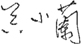
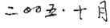

序

“中医”是我们祖先留下来最重要的遗产之一，在过去三千年间，它为我们的先人解决了无数的病痛。但在近百年来，中国受到列强的侵略，西方文化进入闭锁的中国，西方的医术、医学也进入我国，中医、西医碰撞了起来。中医的发展也受到很大的影响，可以说是一段颠簸停顿的历史。1949年新中国成立后，提倡中西医结合，中医得到大力支持，在中医界相继有用现代科学化的语言文字阐明治本方面的论述，使人们了解中医理论人与自然的关系，可谓天人合一。
进入21世纪，我国人口老化也随之而来，高龄老人最大的问题就是来自慢性病的医疗及保健问题。自我国改革开放以来，大量引进西方医学、医术和设备，同时也引进了西方世界不断增长的医疗支出体系，给人口众多的我国增添了很大的经济负担。在这个时机，这本书的出版有很重要的意义，提醒我们，中医“治于未病”的自然方法，很可能是解决老年化人群健康的一个重要方向。
本书作者吴清忠先生是一个在中国大陆工作了十多年的台湾人，许多我国在中医经络研究中的重大发展，我是看了这本书后才了解的。这本书中提到杰出班子的工作成果也提醒了我们，中医现代化不可局限在医学界里，应该有更多的基本科学学科的科学家参与工作。中医现代化是我们这一代中国人不可推卸的责任，我们期许未来解开中医神秘面纱的必定是我们中国人。

作者简介：
吴小兰女士，
新竹基金会主席；
曾任深圳市人大副主任、深圳市副市长、中信集团董事等；
前全国政协常务副主席叶选平先生的夫人，中共五老之一吴玉章先生的外孙女，对健康养生法、自然疗养法有特殊的心得。